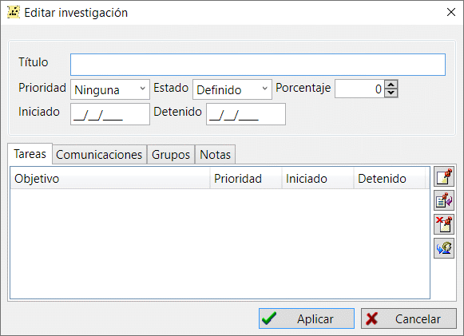

Utiliza los registros de investigación para gestionar las direcciones principales de la investigación y la prioridad de dichas direcciones. Se crea una línea de investigación para una rama familiar y se le asigna una prioridad relativa. A continuación, realiza un seguimiento de un periodo de tiempo en el que la investigación está en curso, comprueba el estado actual de la investigación y su estado de finalización.
Puedes dividir la investigación en tareas individuales, añadir la comunicación con familiares u otros investigadores mediante un registro de correspondencia y añadir grupos sociales para encontrar fácilmente a todas las personas que fueron investigadas bajo esta dirección de investigación.
Añade una descripción del progreso de la investigación y los comentarios asociados mediante notas de texto.

En la pestaña "Investigaciones" de la ventana principal de trabajo hay una tabla unificadora que incluye todas las investigaciones disponibles en la base de datos. A la derecha de la tabla, un resumen de la investigación muestra toda la información sobre la investigación seleccionada.
Ver también: Tareas, Correspondencia, Grupo, Nota.